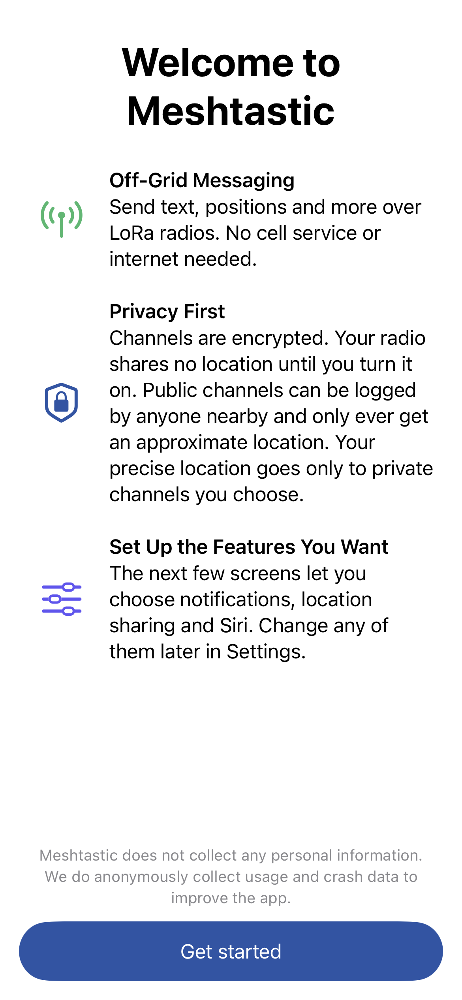
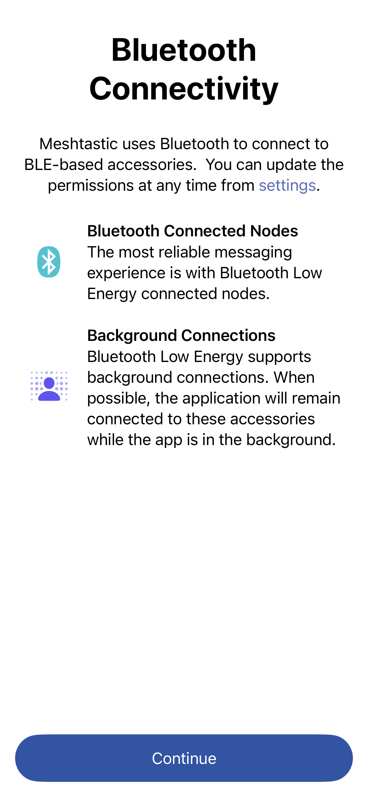
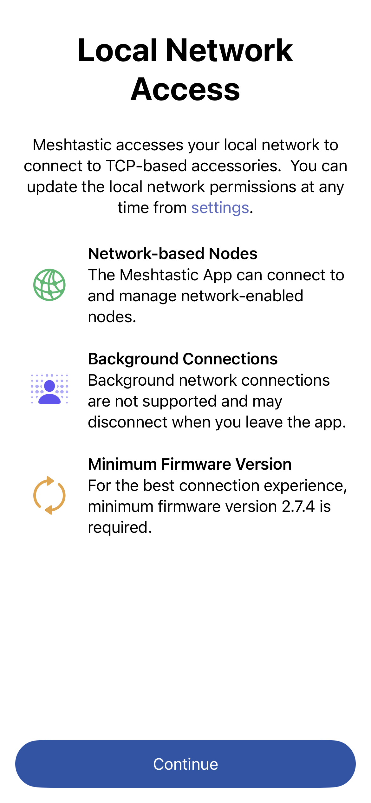
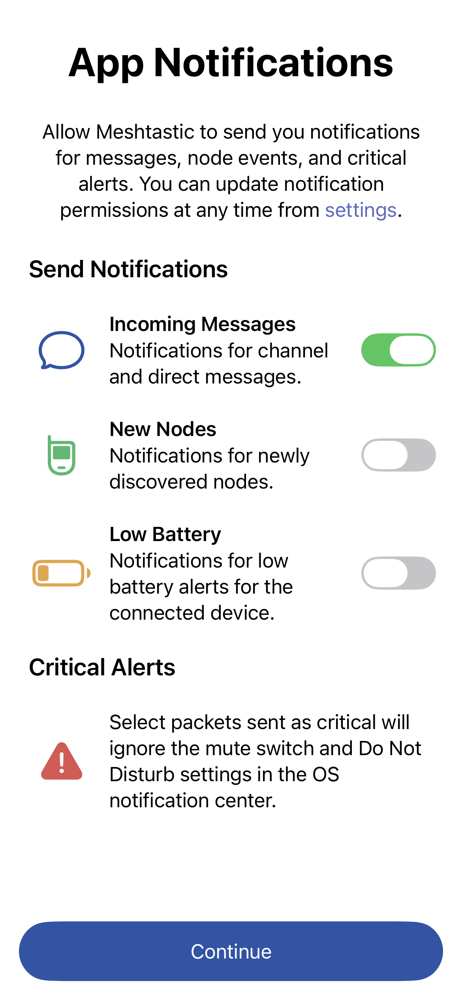
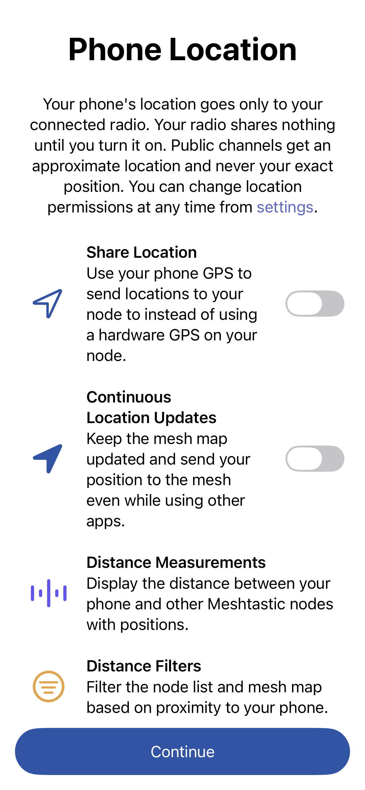
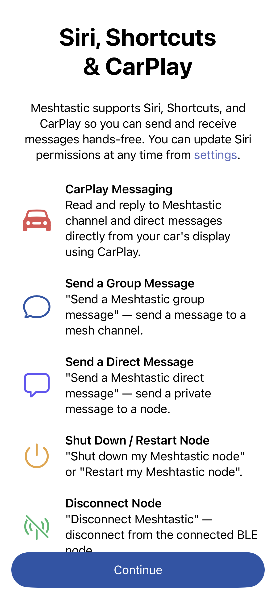

Welcome to the Meshtastic Apple app — your iOS, iPadOS, and macOS companion for off-grid mesh radio communication.
Turn on your Meshtastic radio. Most devices show a splash screen and begin broadcasting on the mesh immediately.
The connection indicator turns green when the radio is paired and communicating.
The first time the app opens, a short guided setup says what Meshtastic is and walks through the permissions the app uses, in order. Each screen explains what the permission is for, and any of them can be changed later in iOS Settings. Tapping Continue advances to the next step, after granting or declining the permission.
1. Welcome — what Meshtastic does, how it treats location (the radio shares none until it is turned on, and public channels only ever get an approximate location), and a note that the next screens set up the features you want.

2. Bluetooth — required to discover and connect to your radio.

3. Local Network — lets the app find radios connected over Wi-Fi or Ethernet.

4. Notifications — toggle which alerts you want before granting permission: incoming messages, new nodes, low battery, and critical alerts that bypass silent mode and Do Not Disturb.

5. Location — optional; lets your phone supply position to your radio and keep the map updated in the background. The phone's location goes only to the connected radio. Public channels get an approximate location, never the exact position. This step is skipped if location access was already granted.

6. Siri & Shortcuts — optional; enables voice commands and CarPlay messaging.

Your name broadcasts to nearby nodes automatically.
Once connected, the app shows nearby nodes in the Nodes tab. Tap any node to see details like signal strength, last heard time, and position.
Send your first message by tapping the Messages tab and selecting the primary channel.
Visit Settings → LoRa to verify your region code matches your location. Using the wrong region is illegal and will prevent communication with other nodes in your area.